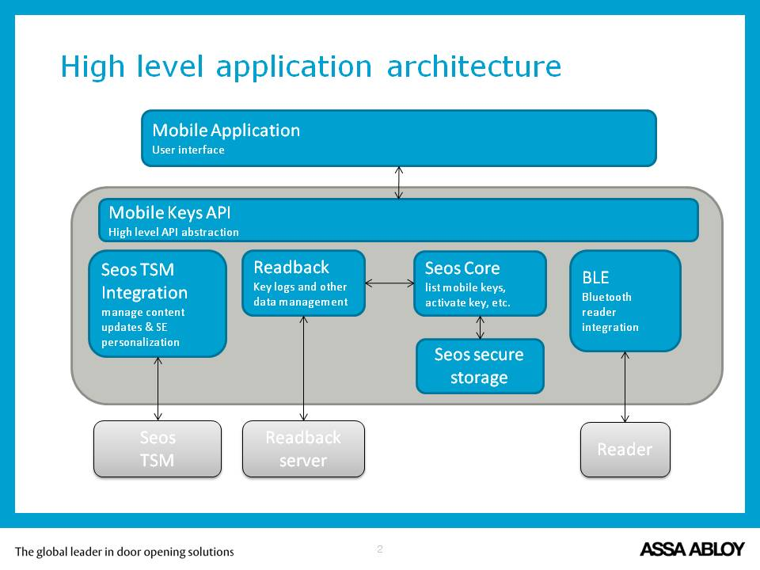

SeosMobileKeysSDK Reference
SeosMobileKeysSDK Reference
Introduction
This documents the ASSA ABLOY Mobile Keys iOS SDK. The SDK itself consists of a dynamic framework that can be linked into IOS Applications.
The SDK takes care of the following main tasks:
- Bluetooth communication with compatible BLE locks implementing the Seos Lock Profile
- Communication with the Seos TSM Server
- Secure storage of Digital Keys in an encrypted Soft Seos file
- Communication with an optional Readback server
In addition to this, the following optional functionality is built into the SDK
- Motion Detection of the device (Rotate device to trigger a BLE connection to the closest supported reader)
- Location Monitoring using iBeacons (improves BLE responsiveness)

Introductory installation notes
There are two flavors of the SDK, Release and Debug. Both are dynamic Cocoa Touch Frameworks.
The Release flavour contained in the Release directory of the SDK package is protected and encrypted (from 1.3.0) and is intended to be used when you publish your application to the App Store or the beta distribution programs such as Apple TestFlight.
The Debug flavor contained in the Debug directory is meant to be used during development. It will only work with developer provisioning and will throw an exception if used within an app downloaded from the app store.
Both SDK binaries are universal frameworks, this means that they contain both the iphonesimulator and the iphoneos architectures. Please make sure to use the build setting “Build Active Architecture only (ONLY_ACTIVE_ARCH) = YES” when publishing, as Apples servers will automatically reject uploaded bundles that contain simulator slices.
If you are using CocoaPods in your application project you can disregard the Thirdparty directory of the SDK package. Please refer to the “Installation using CocoaPods” guide, after that continue to “General installation notes”.
If you are not using CocoaPods, please read the “Installation without CocoaPods” guide and after that continue to “General installation notes”.
Installation using CocoaPods
For a reference to using CocoaPods: https://guides.cocoapods.org/using/.
Together with the Mobile Keys SDK you will find two CocoaPods podspec files: SeosMobileKeysSDK-.podspec. These files
are in the Debug and Release folders respectively.
Simply use these file as a dependency in your app projects podfile:
pod 'SeosMobileKeysSDK', :path => '<Mobile Keys SDK Package>/SeosMobileKeysSDK-[flavor].podspec'
If you want to use different binaries for e.g. Debug and Release, you can look at the example application Podfile for an example on how to set this up. In short, something along these lines should do it:
project 'SeosExampleApplication', {
'Debug' => :debug,
'Release' => :release,
}
def applibs
pod 'SeosMobileKeysSDK-Debug', :configuration => ['Debug'], :path => 'Mobile_Keys_IOS_SDK/Debug/SeosMobileKeysSDK-Debug.podspec'
pod 'SeosMobileKeysSDK-Release', :configuration => ['Release'], :path => 'Mobile_Keys_IOS_SDK/Release/SeosMobileKeysSDK-Release.podspec'
end
Keep in mind that the podspec contains relative path references to the SDK artifacts and if you move them you will need to update the podspec.
use_frameworks!
Currently, the Mobile SDK relies on it’s dependencies being dynamic frameworks. Unfortunately this means that the integrating application also need to use this option with CocoaPods for the SeosMobileKeysSDK to work. If this requirement is incompatible with the integrating application, for instance the integrating application depends on a pod that must be a static library you can work around this limitation.
- Option 1: If it’s the case that the integrating application depends on a pod that must be compiled statically, it can be an option to take keep this dependency outside of CocoaPods by taking the built product and drag it into Xcode.
- Option 2: Use the Mobile SDK outside of Cocoapods. Refer to the ‘Installation without CocoaPods’ section for detailed instructions.
General installation notes
Background modes
The application needs to specify the background mode “bluetooth-central”, or BLE will not work when the application is in the background.
Starting with iOS 10.0, An iOS app which accesses the Bluetooth interface, must statically declare the intent to do so. Include the NSBluetoothPeripheralUsageDescription key in your app’s Info.plist file and provide a purpose string for this key. If your app attempts to access the Bluetooth interface without a corresponding purpose string, your app exits
For running the application in the background some additional steps are also required. If the application tries to start BLE scanning using the mode MobileKeysScanModeOptimizePerformance, the application now needs to request authorization from the OS and enable background location updates. If background operation is not required, use the MobileKeysScanModeOptimizePowerConsumption scan mode instead.
When the scan mode “MobileKeysScanModeOptimizePerformance” is used, the SDK will call CLLocationManager::startUpdatingLocation. iOS will prevent this (fatal error according to the documentation) unless the application first sets the
CLLocationManager::allowsBackgroundLocationUpdates property to YES and
calls the
CLLocationManager::requestAlwaysAuthorization
function that will query the user to authorize location updates preferably in the background.
In addition to this code change, the application also needs to add the appropriate NSLocationWhenInUseUsageDescription, NSLocationAlwaysAndWhenInUseUsageDescription, NSLocationAlwaysUsageDescription and NSLocationUsageDescription to info.plist
Phone Resources used
The following resources are used by the API. These can change at any time, and should not be used by the application. This list is provided to help your application avoid conflicts or clashes. In future releases, the SDK might contain methods to initialize and destroy these resources by the application.
NSUserDefaults Parameters (All internal, do not use or rely on these)
- aamkMobileApiCurrentVersion - Used to store the current version of the API
- aamkMobileApiPropertiesChecksum - Internal parameter
- aaSeosMobileKeysFirstBootKeyValue - Internal Parameter
- aamkMobileApiCurrentPushID - Internal Parameter, keeps the last known Push Id reported to the API
- aamkMobileApiLastServerSyncDate - Internal Parameter, keeps the last successful server communication date
- EndOfSeosFileSystem - Internal Parameter
KeyChain Items (All internal, do not use or rely on these)
Part of the encryption key used for encrypting Seos data is stored in the KeyChain. For the encryption keys, the following identifiers are used:
- kSecClass: kSecClassGenericPassword
- kSecAttrGeneric
- kSecAttrService
- kSecAttrAccount
Files (All internal, do not use or rely on these)
The Encrypted Seos File Structure is called “seosdata” and is stored in the NSApplicationSupportDirectory.
[[NSSearchPathForDirectoriesInDomains(NSApplicationSupportDirectory, NSUserDomainMask, YES) lastObject] stringByAppendingPathComponent:@"seosdata"];
In addition to this file, there is one companion file called “seosdata.bak”.